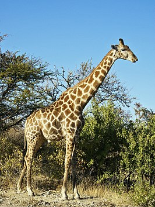

Giraffa
Algemeen:
Giraffa is een geslacht van evenhoevige zoogdieren uit de familie van de giraffen (Giraffidae), waarvan de vertegenwoordigers voorkomen in Afrika. Samen met hun nauwste verwant, de veel kleinere okapi, die een kastanjebruin lichaam, gestreepte poten en een gevlekte kop heeft, vormen de giraffen de familie Giraffidae.
Als je hier klikt, kom je meer te weten over de soorten en ondersoorten van de Giraffa.

Bron: Wikipedia (Giraffa)